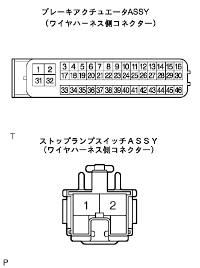
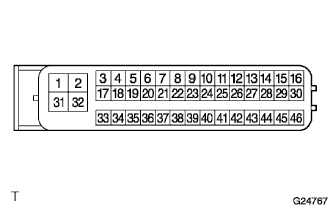

DTC C1249/49 Stop switch disconnection detection |
| Dtcno. | DTC detection conditions | DTC output -related items |
|---|---|---|
| C1249/49 | The IG1 terminal voltage is 9.5-17.2V, and the stop lamp switch circuit cut (between A-B or between A-Body Earth) continues for 0.3 seconds or more. |
|
| Step 1 | Stop lamp lighting inspection |
Turn on the IG switch, step on the brake pedal, and confirm that the stop lamp lights up.
|
| ||||
| OK | |
| Step 2 | Wire harness inspection |
Turn off the IG switch and disconnect the brake actuator asser and stop lamp switch ASSY connectors.
Inspect that there is no deformation and corrosion in the case and terminals of the connector.
|  |
Use SST (Toyota Electrical Tester) to inspect the wire harness between the 27 (STP) terminals of the bracket to the bracket ← → stop lamp switch Assy.
|
| ||||
| OK | |
| Step 3 | Wire harness inspection |
Turn off the IG switch and disconnect the connector of the Swrew actuator Asset ASSY.
|  |
Use SST (Toyota Electrical Tester) to check the 32 (GND1) of the brake actuator wire and the conduct with the body earth.
|
| ||||
| OK | |
| Step 4 | DTC reconfirmation |
After deleting the diagnostic cord, perform a running test and re -output the diag code.
| A | normal |
| B | Stop lamp switch disconnected abnormal code |
|
| ||||
| A | ||
| ||